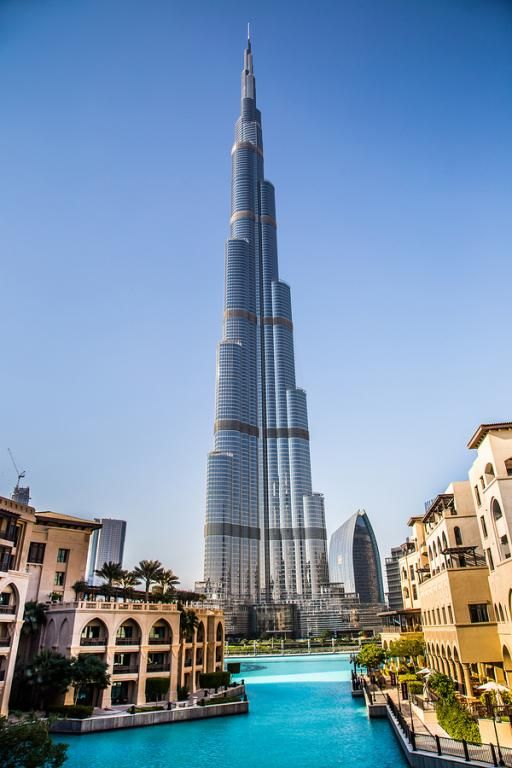

Welcome to World famous Tour and Travel agency India
Domestric tourist place in India
The Taj Mahal
The Taj Mahal, is an ivory-white marble mausoleum on the right bank of the
river Yamuna in the Indian city of Agra. It was commissioned in 1632 by the
Mughal emperor Shah Jahan to house the tomb of his favourite wife, Mumtaz
Mahal; it also houses the tomb of Shah Jahan himself. Wikipedia
Address: Dharmapuri, Forest Colony, Tajganj, Agra, Uttar Pradesh 282001
Hours:
Open now
·
Add full hours
Phone: 0562 222 7261
Architect: Ustad Ahmad Lahouri
Construction started: 1631
Opened: 1648
Height: 73 m
Architectural style: Mughal architecture
Built for: Mumtaz Mahal
Function: Monument, Mausoleum, Tomb
Domestric tourist place in India
Rashtrapati Bhavan
Rashtrapati Bhavan, home to the President of the world’s largest democracy,
epitomizes India’s strength, its democratic traditions and secular character.
Rashtrapati Bhavan was the creation of architects of exceptional imagination
and masterfulness, Sir Edwin Lutyens and Herbert Baker. It was Sir Lutyens who
conceptualized the H shaped building, covering an area of 5 acres on a 330 acre
estate. This mansion has a total of 340 rooms spread over four floors, 2.5 kilometres
of corridors and 190 acres of garden area.Painstaking efforts of thousands of
labourers including masons, carpenters, artists, carvers, and cutters saw the
the fashioning of the magnificent Rashtrapati Bhavan.”
When constructed, it was called the Viceroy’s House. The name changed to Government House
on August 15, 1947 when India became independent. Finally, its name was changed to
Rashtrapati Bhavan during the term of President Dr. Rajendra Prasad.
International tourist place In Dubai

The Burj Khalifa
The Burj Khalifa, known as the Burj Dubai prior to its inauguration in 2010, is a skyscraper in Dubai, United Arab Emirates. Wikipedia
Located in: Burj Park by Emaar
Address: 1 Sheikh Mohammed bin Rashid Blvd - Downtown Dubai - Dubai - United Arab Emirates
Departments: Burj Khalifa Pool Annex
Hours:
Open 24 hours
Phone: +971 4 888 8888
Appointments: atthetop.ae
Height: 828 m, 830 m to tip CTBUH
Floors: 163
Owner: Emaar Properties
Architects: Adrian Smith, George J. Efstathiou, Marshall Strabala
Construction started: 6 January 2004
Contractors: Samsung C&T Corporation, Turner Construction, Laing O'Rourke, Besix, Arabtec Holding PJSC
Opened: 4 January 2010
International tourist place In Dubai
The Burj KAl Arab
The Burj Al Arab was designed by the multidisciplinary consultancy Atkins, led by architect Tom Wright. The design and construction were managed by Canadian engineer Rick Gregory, also of WS Atkins. Construction of the island began in 1994 and involved up to 2,000 construction workers during peak construction. It was built to resemble the billowing spinnaker sail of a J-class yacht.[15] Two "wings" spread in a V to form a vast "mast", while the space between them is enclosed in a massive atrium.
The hotel was built by South African construction contractor Murray & Roberts, now renamed Concor and Al Habtoor Engineering. The interior designs were led and created by Khuan Chew and John Coralan of KCA international and delivered by UAE based Depa
International tourist place In Dubai
DubaiGarden
There are 60 different varieties of flowers on site, including petunias, geraniums and marigolds. Flowers are preserved by re-using waste water through drip irrigation.
The gardens are closed during Dubai's notoriously hot summer months. Temperatures average 40 C (104 F) from June to September -- not exactly conducive to flower gazing.
However, the sanctuary is also home to the region's first indoor butterfly garden and sanctuary, Dubai Butterfly Garden, which is open all year round.
Dubai Miracle Garden: Al Barsha South; open daily from October to April
International tourist place In Dubai
Sand Boading
Dubai, also known as the “Desert City”, is a paradise for sandboarders and sandsports lovers in general, and so is the rest of the United Arab Emirates (UAE). The Arabian Desert, one of the largest desertic areas in the world, offers some of the most suggestive landscapes in the world, attracting tourists and adrenaline seekers from all over the world. For a quintessential Dubai experience, you must go on a desert safari with dune bashing – the Arab version of sand duning, which involves driving at very fast speeds on very bumpy sand dunes, and of course, enjoy some incredible sandboarding on one of the countless sand red dunes in the area.
 Welcome to World famous Tour and Travel agency India
Welcome to World famous Tour and Travel agency India